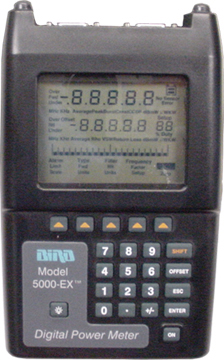
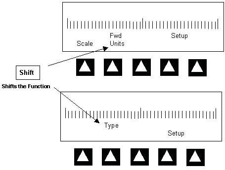

Operating Documentation
Direction 5440001-3, Rev# 6
Signa HDxt Service Methods
Module Version 1.0, Version Date 5/3/07
Operating Documentation |
This section briefly describes the operation of the Power Measurement Wattmeter Kit, 2372868. See the Vendor Manual for additional information on configuring the Wattmeter.
Illustration 1: Wattmeter

Simply switching it off and then back on resets the Digital Wattmeter. If you get confused press the ON button twice and start the procedure over
The Arrow Buttons Point to the corresponding item within the LCD Display, directly above the button. (See Illustration 2)
Pressing the Shift Button shifts the function of the Arrow Key
Illustration 2: WATTMETER OPERATION
